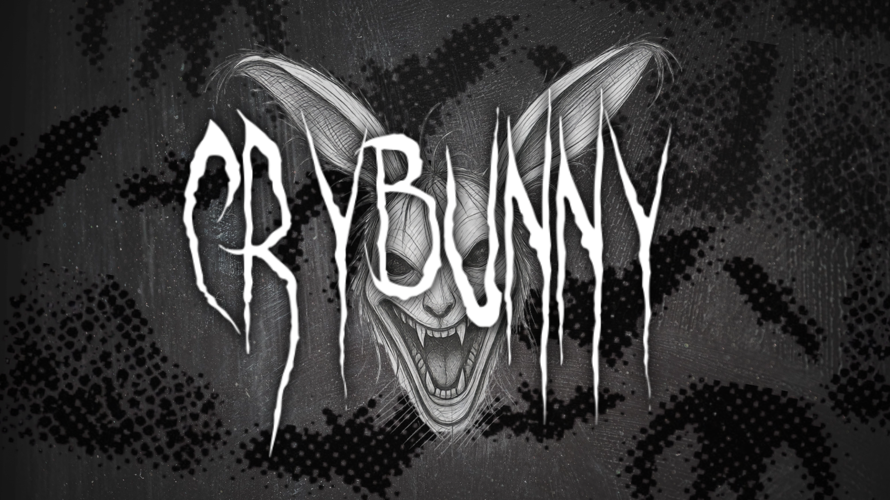
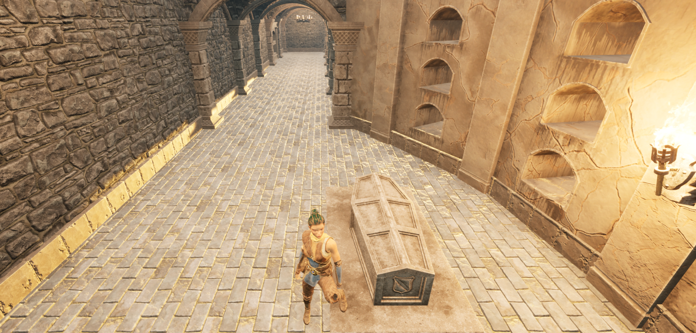
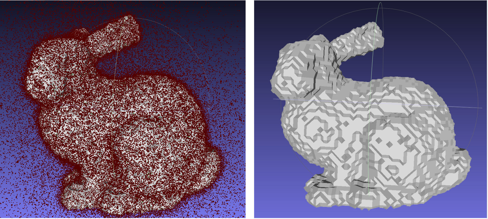
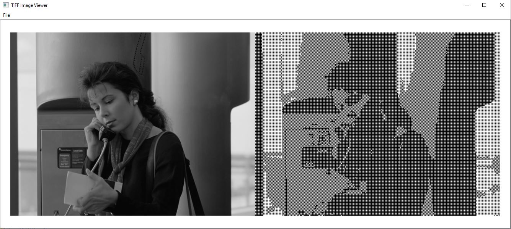

In development
In development
First-person parkour in Unreal. A C++ movement port tested frame by frame, then brought into a rooftop time trial.
I make games, build tools, and follow the occasional strange idea.
Gameplay programmer
& technical designer
SFU Computer Science →
Master of Digital Media, CDM
In development
First-person parkour in Unreal. A C++ movement port tested frame by frame, then brought into a rooftop time trial.
A gothic roguelike about learning the rules and turning them to your advantage.

CDM game jam / Team of six
A browser horror game where the rhythm of your cries calls for help. I programmed alongside Stone, choosing the stack together and setting up a pipeline for our artists.

A small detour
Night Sky is a little telescope made from drawing rules.
Stars, dust, and little clusters of light. Try another view.
Night Sky source ↗Interactive adaptation of my original Canvas experiment.
Sometimes it’s a game system.
Sometimes it’s an image, a surface,
or a way to learn something.

Neural Field Reconstruction — a feature grid and neural network turn occupancy samples into a 3D surface.
Project slides ↗
TIFF Image Processing — brightness, ordered dithering, and automatic levels in a desktop image tool.
Source ↗I like the part where an idea becomes something you can actually try.
I’m a computer science graduate from SFU, now studying in the Master of Digital Media program at CDM in Vancouver.
I’m used to small teams, where you move between code, design, and whatever the prototype needs next. Games are my focus; graphics, interactive tools, and teaching have shaped how I think about making things understandable.
I’m looking for gameplay programming and technical design roles where I can build, test, and refine the details players feel.
Have something in mind?